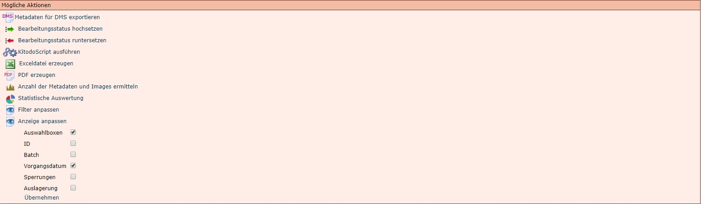
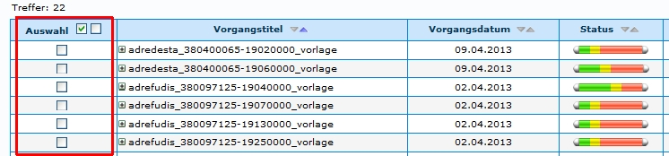
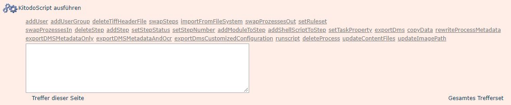

Einleitung
KitodoScripte dienen dazu, eine Aktion an mehreren Vorgängen durchzuführen, anstatt jeden Vorgang an sich bearbeiten zu müssen.
Schritt 1: Vorgänge suchen
Führen Sie zunächst eine Suche durch, die genau die Vorgänge als Treffer anzeigen wird, die bearbeitet werden sollen. Wenn es nicht möglich ist, die Treffermenge durch die Suche exakt zu beschränken, kann Schritt 2 durchgeführt werden.
Schritt 2: Vorgänge selektieren
Soll das KitodoScript nicht auf das gesamte Trefferset oder auf die gesamte Trefferseite angewendet werden, müssen zunächst die gewünschten Vorgänge aus dem Trefferset markiert werden. Dies erreicht man, indem zunächst unterhalb des Treffersets die Aktion "Anzeige anpassen" aufgerufen und dort die Auswahlboxen markiert werden.

Ein Klick auf Übernehmen lädt anschliessend die Seite neu. so dass im Trefferset nun die Auswahlboxen angezeigt werden, mittels denen nun eine Selektion erfolgen kann.
ACHTUNG!: Es muss unbedingt darauf geachtet werden, dass nur die Vorgänge markiert sind, die tatsächlich durch das Script bearbeiten werden sollen. Einige Funktionen können nicht rückgängig gemacht werden.

Schritt 3: KitodoScript auswählen
Wenn die Vorgänge, die bearbeitet werden sollen, korrekt ausgewählt wurden, muss das Script ausgewählt werden, das ausgeführt werden soll.

Auslösen der Scripte
Mit folgenen Befehlen wird das Script ausgelöst:
-
Auswahl: Das Script wird bei den Vorgängen angewendet, die mit den Auswahlboxen markiert wurden.
-
Treffer dieser Seite: Das Script wird bei den Vorgängen angewendet, die auf der Seite angezeigt werden.
-
Gesamtes Trefferset: Das Script wird bei allen Vorgängen des Treffersets angewendet, also auch Vorgänge, die nicht auf der Seite angezeigt werden, wenn die Vorgangsliste so lange ist, dass es mehrere Listen gibt.
Mögliche Scripte
Es werden mehrere Scripte zur Auswahl angeboten. Im Folgenden werden diese mit dem zugehörigen Befehl aufgelistet. Aufgrund mangelnder Erfahrung wird in den meisten Fällen auf eine Beschreibung verzichtet.
Großgeschriebene Textteile (TITLE_STEP, USER_NAME,...) sind Variable, die vor der Anwendung des Scripts durch den entsprechenden Wert (Bezeichnung eines bestimmten Schritts, Name eines Benutzers) ersetzt werden müssen.
addUser
Skriptname: addUser
Script: action:addUser "steptitle:TITLE_STEP" username:USER_NAME
Erläuterung: Mit diesem Befehl kann den Vorgängen eines Treffersets einer Aufgabe ein bestimmter Benutzer zugewiesen werden.
addUserGroup
Skriptname: addUserGroup
Script: action:addUserGroup "steptitle:TITLE_STEP" group:GROUP_NAME
Erläuterung: Mit diesem Befehl kann den Vorgängen eines Treffersets einer Aufgabe eine bestimmte Benutzergruppe zugewiesen werden.
deleteTiffHeaderFile
Skriptname: deleteTiffHeaderFile
Script: action:deleteTiffHeaderFile
Erläuterung: Mit diesem Befehl kann die TiffHeader-Datei (tiffwriter.conf) im Imageverzeichnis gelöscht werden.
swapSteps
Skriptname: swapSteps
Script: action:swapSteps swap1nr:ORDER_NUMBER_FIRST_STEP "swap1title:TITLE_FIRST_STEP"swap2nr:ORDER_NUMBER_SECOND_STEP "swap2title:TITLE_SECOND_STEP"
Erläuterung: Zu diesem Befehl liegen keine gesicherten Informationen vor.
importFromFileSystem
Skriptname: importFromFileSystem
Script: action:importFromFileSystem sourcefolder:SOURCE_FOLDER
Erläuterung: Zu diesem Befehl liegen keine gesicherten Informationen vor.
swapProzessesOut
Skriptname: swapProzessesOut
Script: action:swapProzessesOut
Erläuterung: Zu diesem Befehl liegen keine gesicherten Informationen vor. -> Das Script scheint nicht zu funktionieren: https://bugs.launchpad.net/goobi-production/+bug/789027
setRuleset
Skriptname: setRuleset
Script: action:setRuleset "ruleset:TITLE_RULESET"
Erläuterung: Mit diesem Befehl kann den Vorgängen eines Treffersets ein anderer Regelsatz zugewiesen werden.
swapProzessesIn
Skriptname: swapProzessesIn
Script: action:swapProzessesIn
Erläuterung: Zu diesem Befehl liegen keine gesicherten Informationen vor.
deleteStep
Skriptname: deleteStep
Script: action:deleteStep "steptitle:TITLE_STEP"
Erläuterung: Mit diesem Befehl kann in den Vorgängen eines Treffersets eine Aufgabe gelöscht werden.
addStep
Skriptname: addStep
Script: action:addStep "steptitle:TITLE_STEP" number:NUMBER_1_TO_?
Erläuterung: Mit diesem Befehl kann den Vorgängen eines Treffersets eine weitere Aufgabe und deren Reihenfolge hinzugefügt werden.
setStepStatus
Skriptname: setStepStatus
Script: action:setStepStatus "steptitle:TITLE_STEP" status:NUMBER_0_TO_3
Erläuterung: Mit diesem Befehl kann in den Vorgängen eines Treffersets der Status einer Aufgabe geändert werden.
0= Gesperrt1= Offen2= In Bearbeitung3= Abgeschlossen
setStepNumber
Skriptname: setStepNumber
Script: action:setStepNumber "steptitle:TITLE_STEP" number:NUMBER_1_TO_?
Erläuterung: Mit diesem Befehl kann in den Vorgängen eines Treffersets die Reihenfolge (Nummer) einer Aufgabe geändert werden.
addModuleToStep
Skriptname: addModuleToStep
Script: action:addModuleToStep "steptitle:TITLE_STEP" "module:MODULE_NAME"
Erläuterung: Zu diesem Befehl liegen keine gesicherten Informationen vor.
addShellScriptToStep
Skriptname: addShellScriptToStep
Script: action:addShellScriptToStep "steptitle:TITLE_STEP" "label:LABEL_FOR_SCRIPT" "script:PATH_TO_SCRIPT"
Erläuterung: Mit diesem Befehl kann in den Vorgängen eines Treffersets der "Script Schritt" in den Eigenschaften einer Aufgabe geändert werden.
label= Skriptnamescript= Skriptpfad
setTaskProperty
Skriptname: setTaskProperty
Script: action:setTaskProperty "steptitle:TITLE_STEP" property:metadata_readimages_writeimages_validate_exportdms_automatic_batch value:true_OR_false
Erläuterung: Mit diesem Befehl kann in den Vorgängen eines Treffersets die Eigenschaften einer Aufgabe geändert werden.
Folgende Aufgabeneigenschaften können aktiviert / deaktiviert werden:
- metadata = Metadaten
- readimages = Images lesen
- writeimages = Images schreiben
- validate = Beim Abschließen verifizieren
- exportdms = Export DMS
- automatic = Automatische Aufgabe
- batch = Batch Schritt
Aktivierung/Deaktivierung
- value:true = Aufgabeneigenschaft wird aktiviert
- value:false = Aufgabeneigenschaft wird deaktiviert
tiffWriter
ACHTUNG: Dieses Script ist bis zur Kitodo.Production-Version 2.2.0 vorhanden und wurde in der Kitodo.Production-Version 2.3.0. entfernt
Skriptname: tiffWriter
Script: action:tiffWriter
Erläuterung: Zu diesem Befehl liegen keine gesicherten Informationen vor.
export
ACHTUNG: Dieses Script ist bis zur Kitodo.Production-Version 2.2.0 vorhanden und wurde in der Kitodo.Production-Version 2.3.0. entfernt
Skriptname: export
Script: action:export exportImages:{true|false} exportOcr:{false|true}
Erläuterung: Mit diesem Befehl werden die Vorgänge eines Trefferset exportiert. Über die Parameter exportImages und exportOcr kann bestimmt werden, ob die Bilddaten und / oder OCR Daten mit exportiert werden oder nicht.
exportDms
Skriptname: exportDms
Script: action:exportDms exportImages:true_OR_false
Erläuterung: Mit diesem Befehl werden die Vorgänge eines Trefferset mit oder ohne Bilddaten exportiert
- action:exportDms exportImages:false = Export ohne Bilddaten.
- action:exportDms exportImages:true = Export mit Bilddaten.
copydata
Skriptname: copydata
Script: action:copyData <rule(s)>
Erläuterung: Mit diesem Befehl können die Metadaten der Vorgänge eines Treffersets kopiert, entfernt oder hinzugefügt werden.
rewriteProcessMetadata
Skriptname: rewriteProcessMetadata
Script: action:rewriteProcessMetadata
Erläuterung: Zu diesem Befehl liegen keine gesicherten Informationen vor.
exportDMSMetadataOnly
Skriptname: exportDMSMetadataOnly
Script: action:exportDMSMetadataOnly
Erläuterung: Mit diesem Befehl werden die Metadaten der Vorgänge eines Trefferset ohne OCR- oder Bilddaten exportiert.
exportDMSMetadataAndOcr
Skriptname: exportDMSMetadataAndOcr
Script: action:exportDMSMetadataAndOcr
Erläuterung: Mit diesem Befehl werden die Metadaten und OCR-Daten der Vorgänge eines Trefferset ohne Bilddaten exportiert.
exportDmsCustomizedConfiguration
Skriptname: exportDmsCustomizedConfiguration
Script: action:exportDmsCustomizedConfiguration exportImages:true_OR_false exportOcr:true_OR_false
Erläuterung: Mit diesem Befehl werden die Metadaten der Vorgänge eines Trefferset exportiert. Der Export der Images der OCR- und der Bilddaten kann konfiguriert werden. Wenn Bilddaten exportiert werden, werden immer OCR-Daten exportiert.
runscript
Skriptname: runscript
Script: action:runscript "stepname:TITLE_STEP" "script:SCRIPT_NAME"
Erläuterung: Zu diesem Befehl liegen keine gesicherten Informationen vor.
deleteProcess
Skriptname: deleteProcess
Script: action:deleteProcess contentOnly:true_OR_false
Erläuterung: Mit diesem Befehl können die Vorgänge eines Treffersets gelöscht werden. Es stehen zwei Optionen zur Verfügung: 1. Löschen des Vorgangs: Der komplette Datensatz wird in Kitodo.Production gelöscht. 2. Löschen des Vorgang-Inhalt: Der Inhalt (Metadaten, Images, ...) des Vorgangs wird in Kitodo.Production gelöscht. Der Vorgang bleibt erhalten.
updateContentFiles
Skriptname: updateContentFiles
Script: action:updateContentFiles
Erläuterung: Zu diesem Befehl liegen keine gesicherten Informationen vor.
updateImagePath
Skriptname: updateImagePath
Script: action:updateImagePath
Erläuterung: Zu diesem Befehl liegen keine gesicherten Informationen vor.
importProcesses
Skriptname: importProcesses
Script: action:importProcesses indir:/path/to/directory/ project:#id template:#id [errors:/path/to/directory/]
Erläuterung: Importiert Vorgänge, die nur als Vorgangsverzeichnisse existieren, aber noch nicht, oder nicht mehr, in der Datenbank.
indir= Pfad zu dem Ordner, in dem die zu importierenden Vorgangsordner liegenproject= Nummer des Projektes, in dem die Vorgänge erstellt werden sollentemplate= Nummer der Produktionsvorlage, auf Basis derer die Vorgänge erstellt werden sollenerrors= (optional) Pfad zu einem Ordner, in den nicht importierbare Vorgänge kopiert werden sollen. In den Vorgangsordnern wird jeweils eine Textdatei erstellt, die angibt, warum der Import nicht möglich war.